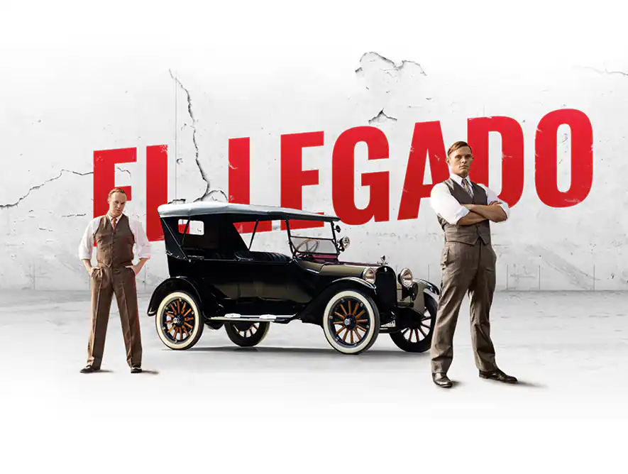
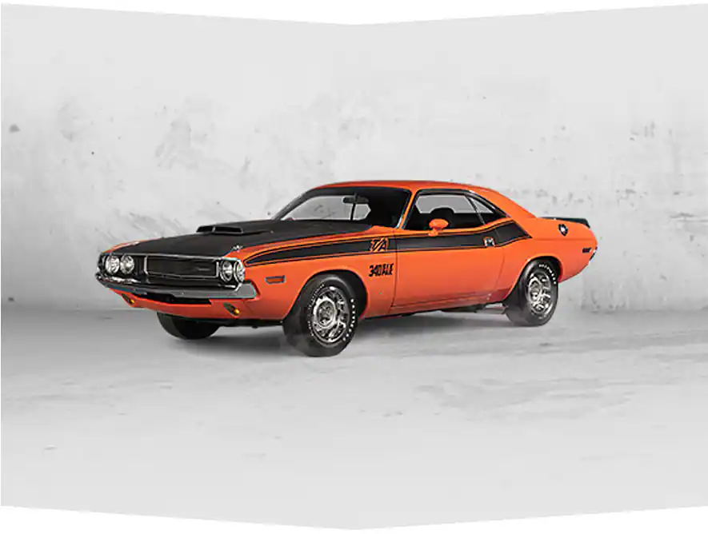
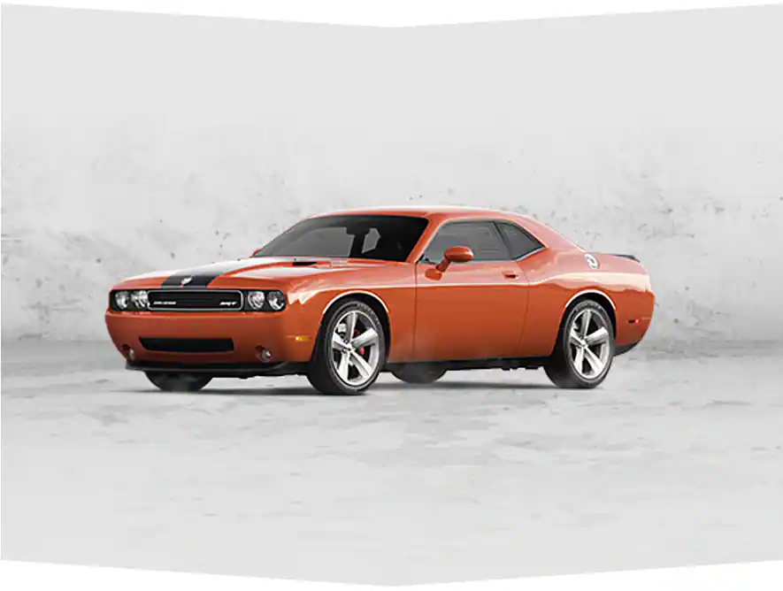
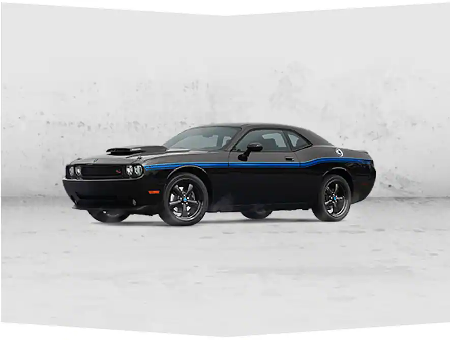
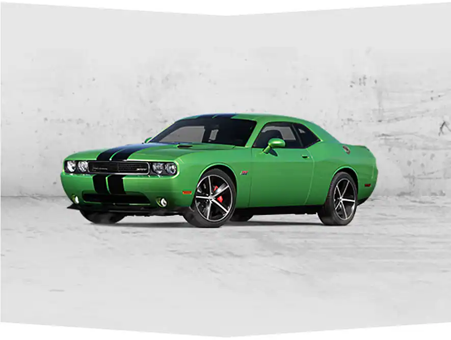

LEGADO QUE SE RESPETA
Generación tras generación, su silueta se ha convertido en sinónimo de respeto. Conoce más
sobre el legado del Dodge Challenger a través de los años

En 1970 se debutó Dodge challenger como modelo especial T/A para competir en el circuito Trans Am.

Challenger es introducido exclusivamente en SRT8 con un motor HEMI V8 de 6.1L y 425HP. Su exterior cuenta con rayas de fibra de
carbono que reflejan todo el poder, velocidad y adrenalina.

La edición especial de Mopar cuenta con un cofre y diseño exterior que destaca el poder de un verdadero auto de carreras.

La potencia de Challenger destaca este año con un motor pentastar v6 con 305HP como versión estándar, también con 375HP de 5.7L o
470HP. EL poder de manejar un Dodge